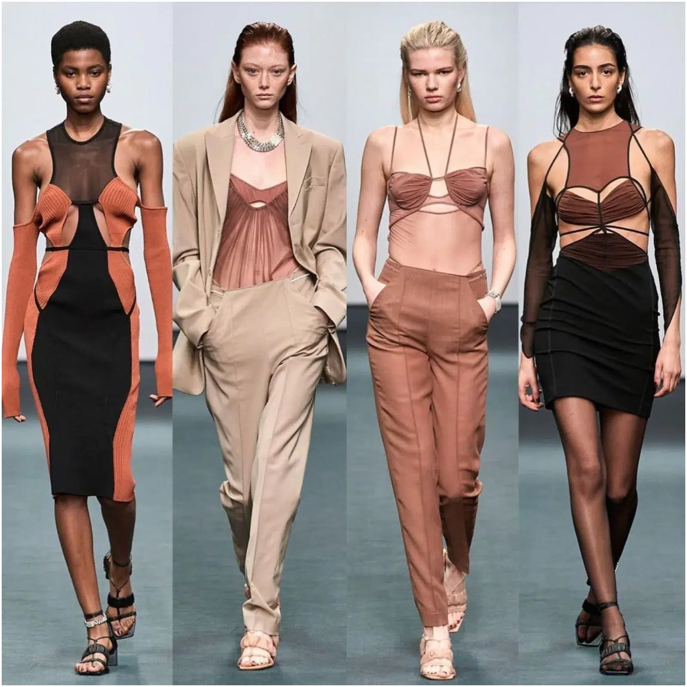

El diseño de indumentaria es una disciplina que se encarga de diseñar y producir prendas de vestir, zapatos y accesorios. Los diseñadores de indumentaria combinan habilidades artísticas y científicas con conocimientos técnicos y tecnológicos.
Posibles salidas laborales
Trabajar en empresas de confección y estampado de telas y tejidos
Coordinar producciones de moda para medios de comunicación
Diseñar y asesorar vestuario artístico para cine, teatro y televisión
Consultar independiente en la inserción de nuevas marcas de indumentaria
Emprender negocios propios o liderar puestos gerenciales en la industria del diseño de indumentaria

¿Cuánto dura la carrera de diseño e indumentaria?
El Plan de estudios de Diseño Textil y de Indumentaria tiene 4 años de duración, y permite personalizar la carrera profundizando con materias electivas en tu área de interés.
Diseño de moda
El diseño de moda se encarga de la creación de ropa y de accesorios en función de las influencias culturales y sociales de un período específico. Representa el estilo e idea del creador, según su talento y sus conocimientos.
¿Cuál es el objetivo de la carrera de diseño de modas?
El enfoque de este profesional en diseño de moda es hacia la gestión de proyectos que permitan el desarrollo regional de las cadenas de valor asociadas al diseño de moda. Se distinguirá por su capacidad para resolver problemas y responder a demandas sociales y de mercado
Razones por las que deberias estudiar Diseño de Moda
Habilidad para combinar arte y ciencia: para emprender como profesional, no solo es necesario la creatividad y la vanguardia, sino también la habilidad para aplicar la ciencia y la tecnología en la creación de prendas de vestir. El mundo tecnológico avanza todo el tiempo, por es importante conocer sobre las características y propiedades de los nuevos materiales, la construcción y el patrón de las prendas es fundamental para un diseñador textil e indumentario.
Impacto social y medioambiental: La moda es una industria que tiene un gran impacto en la sociedad y evoluciona constantemente. A través del estudio y capacitación, los diseñadores de moda pueden ser agentes de cambio en la industria, diseñando productos que sean más sostenibles y éticos, y creando conciencia sobre la importancia de la moda responsable.
Oportunidades laborales: La industria de la moda es un campo diverso que abarca muchas áreas, como diseño de ropa, accesorios, calzado, alta costura, fashion film, gestión de la moda, marketing, producción, y más. Estudiar diseño de moda te brinda la posibilidad de incursionar en una industria en constante evolución y de gran demanda. Con habilidades en diseño de moda, puedes trabajar para marcas de moda, iniciar tu propia línea de ropa, trabajar en revistas de moda, o incluso en el diseño de vestuario para películas y teatro.